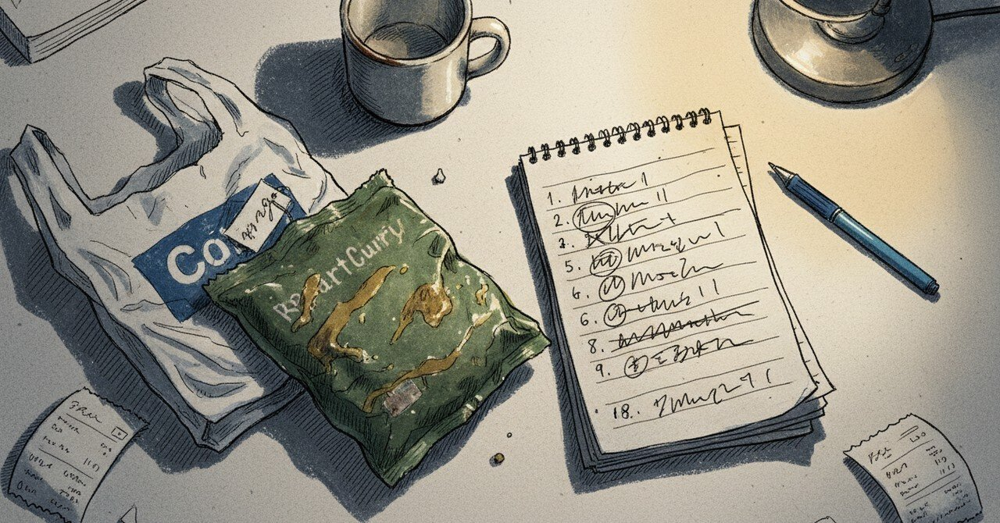

未完成のまま渡した3日後に、ひだまりの「なぜ」が出た

2026年5月7日。 8日前の夜に書いた元カノの記事のことを、まだ手元で考えている。 その記事を書いていた4月29日の夜に、ひだまりというプロダクトのなぜが、初めて1行で出た。
そして、その3日前——4月26日の夜にも、関係する決断をひとつしていた。 β版を、未完成のまま、他の家庭に渡す決断だった。
順番に書く。
まず、3日前の4月26日
子ども向けに作っているアプリのβ版を、まだ自分の子にしか触らせていない状態で、他の家庭に渡すための申込みフォームを置いた日。
朝までは「もう少し直してから渡そう」と思っていた。直したい場所は、あと9つあった。一覧にすると、どれも筋が通っている。 でも昼を過ぎたあたりで、その9つは全部、自分が安心するための直しだと気づいた。 子のために必要な9つというより、私が「未完成のまま渡すのが怖い」を消すための9つだった。
夕方、申込みフォームに「β版モニターになってくれませんか」と書いた。書きながら、自分の子が試している姿を一度思い出した。子は何度も同じところで止まる。私は止まる場所を見て、直す。直すと、また別のところで止まる。 ぜんぶ自分の子だけを見ていたら、止まる場所のパターンが偏る。
その日は他に、近所のクリーニング屋にスラックスを取りに行って、店主のおばあさんに「最近、お客さん減ってね」と話しかけられた。スラックスは1着580円だった。 夜は珍しくレトルトのカレーを食べた。皿に出さず、レンジで温めた袋から直接食べた。何の事件もない一日だった。 「未完成のまま渡す」だけが、頭の中でずっと止まっていた。
完璧主義を、その夜のうちに少しだけ諦めた。 正確に言えば、「完璧を目指す自分」を諦めて、「完璧を目指す前に渡す自分」を、新しく許した。 直したい9つは、消さずにメモに残してある。渡したあとで、別の家庭から別の9つが返ってくる。そっちのほうが、たぶん本当に直すべき9つだ。
そして4月29日の夜
3日経って、元カノの記事を書いていた。
元カノの話は、別れから1年半経った頃に、ようやく文章にできた。 それまで何度か書きかけては、止まっていた。書こうとすると、まだ怒りや未練が混じる。混ざった文章は、誰のためにもならない。
1年半経って、ようやく素材として扱える状態になった。 痛みが消えた、という意味ではない。痛みは残っている。ただ、その痛みを「過去の出来事」として置けるようになった、という距離感の話だった。
距離が取れると、その経験が教材になる。 教材になると、いまの自分の選択や、いま作っているプロダクトのなぜにも、線を引ける。
1年前の夏、まだ書けなかった
ここから話を、1年弱前に戻したい。
2025年8月16日。別れた相手に、手紙を書いていた頃だった。 秋桜の便箋を選んで、筆ペンの練習までして、3〜4枚に渡る長い手紙を書いていた。 10月の再会予定があって、それまでの150日を「整える期間」と決めていた。身体を整える、食生活を整える、メンタルを整える。全部、その人に会うときに「いまの自分でいられる」ためだった。
8月のメモには、こう書いてあった。 筋トレすら、元カノへの祈り。
8月の私は、痛みを燃やして動いていた。燃やしていると、運動できるし、食事も整う。 ただ、燃やし続けることは、長くは続けられない。燃やすものが尽きると、行動も止まる。
10月23日、燃やすものが消えた
10月23日の再会は、結局、こちらの想定通りには進まなかった。 相手の側にも、相手の人生があった。こちらが150日かけて整えてきたとしても、それは相手と関係ないかもしれない、ということを、再会のあとに認めることになった。
そこで、ひとつの段階が終わった。燃やすものが、自然に消えた。
消えたあと、何ヶ月かは虚脱期間だった。虚脱の中で、痛みが少しずつ整理されていった。書こうとしてもまだ書けない、という時期が続いた。
それから半年経って、4月29日。書こうとしたら、書けた。 書けたものに、嘘がなかった。怒りも未練もなく、ただ「過去にあった出来事」として置けた。
ひだまりの「なぜ」が、その夜に出た
書き終えた記事の終盤で、自然に出てきた一文があった。
自分の弱さで、大切な関係を潰した経験があるから、子どもの不安を軽くする側に回りたかった
ひだまりというアプリは、表面的には学習サポートだ。 でも、その底にあったのは「子どもが、不安なままで答えを出さなくていい場所をつくる」という考えだった。
私の中の「なぜ」は、何ヶ月も言葉にならなかった。 それが、元カノの話を素材にできた夜、ようやく1文で出た。
過去の自分の弱さが、いまのプロダクトの設計思想と、線で結ばれた瞬間だった。
3日前の「未完成のまま渡す」と、同じ筋だった
書きながら、3日前の4月26日のことを思い出していた。 あの日、9つの直しを残したまま、申込みフォームを置いた。 完璧の手前で渡すことを、自分に許した夜だった。
4月29日の夜に出た一文と、3日前の決断は、たぶん同じ筋の話だった。
痛みも、プロダクトも、完璧になるまで待つと、たぶん永遠に出ない。 痛みがゼロになるまで待つと、書く動機が消える。 プロダクトを9つ全部直してから渡すと、待っているうちに、必要な人がいなくなる。
「いまの行動を歪ませない距離」まで離せれば、痛みは素材になる。 「自分が安心するための直し」を諦められれば、プロダクトは渡せる。
距離の取り方は、たぶん同じだった。
痛みは、消えなくていい
「過去を消化する」と書くと、痛みがゼロになるような響きがある。 でも、消化された痛みは、たぶんゼロになっていない。
私の中で、いまも元カノとのことは、完全に過去にはなっていない。触れると、まだ少し動く。 動いても、いまの行動を歪ませなくなった。 その状態を、「素材にできる」と呼んでいる。
ゼロにする必要はなかった。 いまの行動を歪ませない距離まで離せれば、痛みは素材になる。 素材になれば、文章にも、プロダクトのなぜにも、誰かに渡す言葉にも、使える。
1年半かかって、ようやく言えた
別れてから1年半。記事にできるまで、それくらいの時間がかかった。 短くないけど、たぶん必要な時間だった。 1年で書こうとしていたら、混ざったものが出ていた。 2年待っていたら、忘れすぎて、書く動機が消えていた。 1年半というのは、ちょうど痛みが素材になる距離だった。
その距離が、ひだまりの「なぜ」を、初めて1行で言わせてくれた。 3日前には、未完成のままアプリを渡す自分を、新しく許していた。
たぶん、両方とも、完璧の手前で動く練習だった。
そしていま、5月7日。両方の夜から少し時間が経って、こうして1本に編んでいる。
#AkariLab #創作大賞2026 #ひだまり #個人開発 #エッセイ